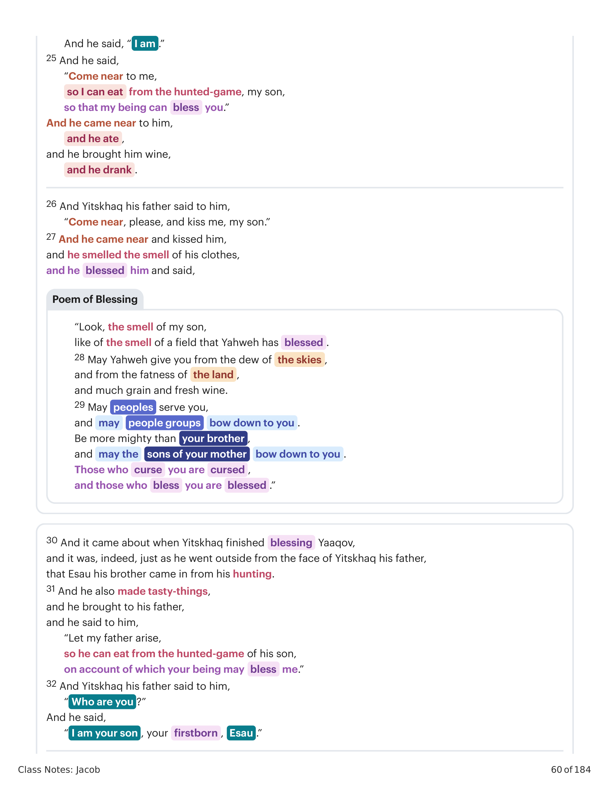
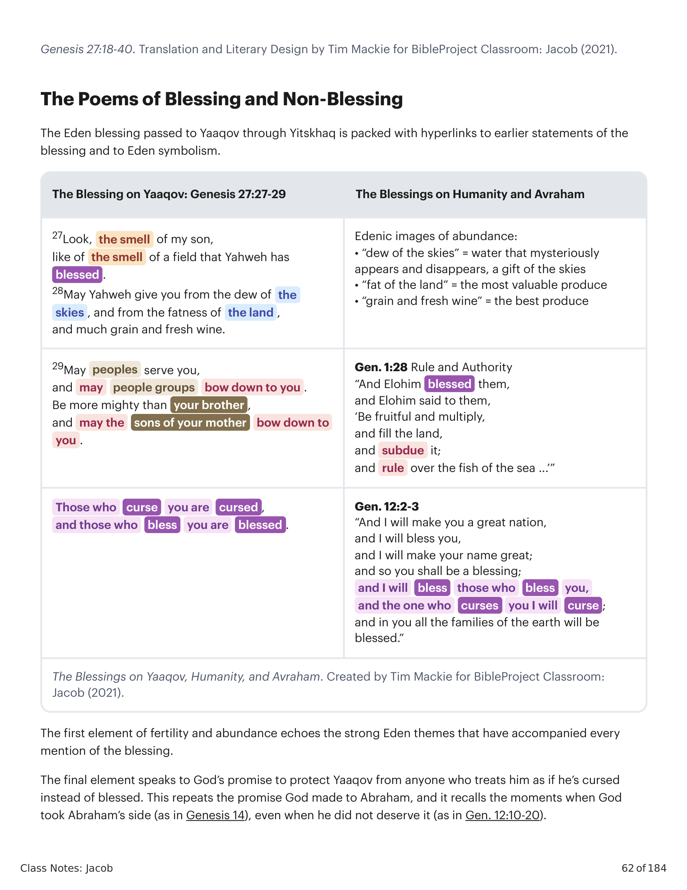
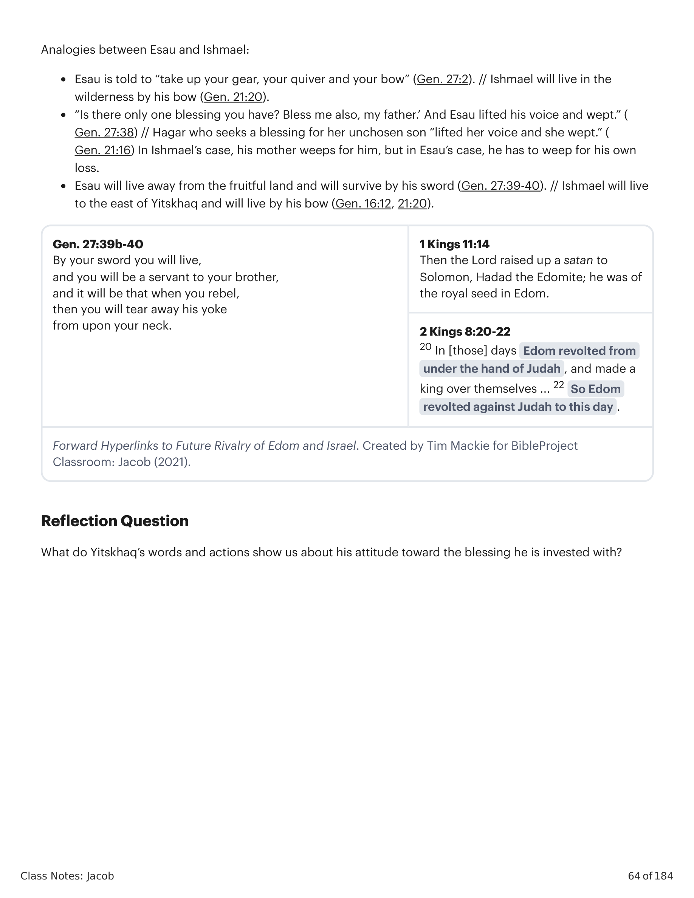

18 E ele disse: "Meu pai." E ele disse: "Eis-me aqui. Quem és tu, meu filho?" 19 E Yaaqov disse a seu pai: "Eu sou Esaú, teu primogênito (בכרך). Fiz como falaste. Levanta-te, peço, assenta-te e come da minha caça, para que tua vida me abençoe (ברך)." 20 E Yitskhaq disse a seu filho: "Que é isso, que achaste tão depressa, meu filho?" E ele disse: "Porque Yahweh teu Elohim o fez acontecer diante de mim." 21 E Yitskhaq disse a Yaaqov: "Chega-te, peço, para que te apalpe, meu filho, se és meu filho Esaú ou não." 22 E Yaaqov chegou-se a Yitskhaq seu pai, e ele o apalpou, e disse: "A voz é a voz de Yaaqov, mas as mãos são as mãos de Esaú." 23 E não o reconheceu, porque suas mãos eram como as mãos de Esaú seu irmão, cabeludas. E o abençoou. 24 E disse: "És tu meu filho Esaú?" E ele disse: "Eu sou." 25 E disse: "Chega-te a mim, para que eu coma da caça, meu filho, para que minha vida te abençoe." E chegou-se a ele, e comeu, e trouxe-lhe vinho, e bebeu. 26 E Yitskhaq seu pai disse-lhe: "Chega-te, peço, e beija-me, meu filho." 27 E chegou-se e o beijou, e ele cheirou o cheiro de suas vestes, e o abençoou e disse: "Eis o cheiro de meu filho, como o cheiro de um campo que Yahweh abençoou. 28 Dê-te Yahweh do orvalho dos céus, e da gordura da terra, e muito cereal e vinho novo. 29 Sirvam-te povos, e curvem-se a ti grupos de povos. Sê mais poderoso que teu irmão, e curvem-se a ti os filhos de tua mãe. Aqueles que te amaldiçoam sejam amaldiçoados, e aqueles que te abençoam sejam abençoados."18 And he said, "My father." And he said, "Look, it's me. Who are you, my son?" 19 And Yaaqov said to his father, "I am Esau, your firstborn (בכרך). I have made just as you spoke to me. Rise up, please, sit and eat from my hunted-game, on account of which your being can bless (ברך) me." 20 And Yitskhaq said to his son, "What is this, that you found so quickly, my son?" And he said, "Because Yahweh your Elohim caused it to happen before me." 21 And Yitskhaq said to Yaaqov, "Come near, please, so I can feel you, my son, if you are my son Esau or not." 22 And Yaaqov came near to Yitskhaq his father, and he felt him, and he said, "The voice is the voice of Yaaqov, but the hands are the hands of Esau." 23 And he did not recognize him, because his hands were like the hand of Esau his brother, hairy. And he blessed him. 24 And he said, "You are my son, Esau?" And he said, "I am." 25 And he said, "Come near to me, so I can eat from the hunted-game, my son, so that my being can bless you." And he came near to him, and he ate, and he brought him wine, and he drank. 26 And Yitskhaq his father said to him, "Come near, please, and kiss me, my son." 27 And he came near and kissed him, and he smelled the smell of his clothes, and he blessed him and said, "Look, the smell of my son, like of the smell of a field that Yahweh has blessed. 28 May Yahweh give you from the dew of the skies, and from the fatness of the land, and much grain and fresh wine. 29 May peoples serve you, and may people groups bow down to you. Be more mighty than your brother, and may the sons of your mother bow down to you. Those who curse you are cursed, and those who bless you are blessed."

Gênesis 27:18-40. Tradução e Design Literário por Tim Mackie para BibleProject Classroom: Jacó (2021).Genesis 27:18-40. Translation and Literary Design by Tim Mackie for BibleProject Classroom: Jacob (2021).
A bênção do Éden passada a Yaaqov através de Yitskhaq está repleta de hiperlinks a declarações anteriores da bênção e ao simbolismo do Éden. O primeiro elemento de fertilidade e abundância ecoa os fortes temas do Éden que acompanharam cada menção da bênção. O elemento final fala da promessa de Deus de proteger Yaaqov de qualquer um que o trate como amaldiçoado em vez de abençoado. Isso repete a promessa que Deus fez a Abraão, e recorda os momentos em que Deus tomou o lado de Abraão (como em Gênesis 14), mesmo quando ele não a merecia (como em Gn 12:10-20).The Eden blessing passed to Yaaqov through Yitskhaq is packed with hyperlinks to earlier statements of the blessing and to Eden symbolism. The first element of fertility and abundance echoes the strong Eden themes that have accompanied every mention of the blessing. The final element speaks to God's promise to protect Yaaqov from anyone who treats him as if he's cursed instead of blessed. This repeats the promise God made to Abraham, and it recalls the moments when God took Abraham's side (as in Genesis 14), even when he did not deserve it (as in Gen. 12:10-20).

As Bênçãos sobre Yaaqov, a Humanidade e Avraão. Criado por Tim Mackie para BibleProject Classroom: Jacó (2021).The Blessings on Yaaqov, Humanity, and Avraham. Created by Tim Mackie for BibleProject Classroom: Jacob (2021).
O elemento do meio, porém, é novo, e é importante lembrar que Yitskhaq pensa estar falando a Esaú, não a Yaaqov. A primazia e autoridade sobre o irmão é ampliada para incluir autoridade sobre outros grupos de povos e todos os outros irmãos, o que nesta narrativa inclui apenas Esaú. Contudo, este elemento novo da bênção antecipa o grande movimento final de Gênesis, sobre como dois dos filhos de Yaaqov se elevam a proeminência e recebem a obediência e a reverência de seus irmãos e das nações.The middle element, however, is new, and it's important to remember that Yitskhaq thinks he is speaking to Esau, not Yaaqov. The primacy and authority over one's brother is broadened to include authority over other people groups and all other siblings, which in this narrative includes only Esau. However, this novel element of the blessing is anticipating the final large movement of Genesis, about how two of Yaaqov's sons rise to prominence and receive the obedience and obeisance of their brothers and the nations.
30 E aconteceu que, assim que Yitskhaq acabou de abençoar a Yaaqov, e este saiu da presença de Yitskhaq seu pai, eis que Esaú seu irmão veio da caça. 32 E Yitskhaq seu pai lhe disse: "Quem és tu?" E ele disse: "Eu sou teu filho, teu primogênito, Esaú." 33 E Yitskhaq tremeu um grande tremor, muitíssimo, e disse: "Quem, então, foi que caçou e trouxe-me, e eu comi tudo antes de vires, e o abençoei? ... Na verdade, ele será o bendito." 34 Ouvindo Esaú as palavras de seu pai, clamou com grande e amargo pranto, e disse a seu pai: "Abençoa-me também a mim, meu pai!" 35 E ele disse: "Veio teu irmão com engano (מרמה), e tomou tua bênção." 36 E ele disse: "Porventura não é ele justamente chamado 'Yaaqov' (יעקב), pois tomou meu calcanhar (יעקבני) estas duas vezes?! Tomou meu direito de primogenitura, e eis que agora tomou minha bênção!" 37 E Yitskhaq respondeu e disse a Esaú: "Eis que o tenho posto como mais poderoso do que tu, e todos os seus irmãos lhe tenho dado por servos, e o tenho sustentado com cereal e vinho novo. Logo, para ti, meu filho, que poderei eu fazer?" 38 E Esaú disse a seu pai: "És tu que tens apenas uma bênção, meu pai? Abençoa-me também a mim, meu pai!" E levantou sua voz, e chorou. 39 E Yitskhaq seu pai respondeu e lhe disse: "Eis que longe da gordura da terra será tua habitação, e longe do orvalho dos céus acima. 40 E pela tua espada viverás, e servirás a teu irmão; e será que, quando andares livre, então quebrarás o seu jugo de sobre teu pescoço."30 And it came about when Yitskhaq finished blessing Yaaqov, and it was, indeed, just as he went outside from the face of Yitskhaq his father, that Esau his brother came in from his hunting. 32 And Yitskhaq his father said to him, "Who are you?" And he said, "I am your son, your firstborn, Esau." 33 And Yitskhaq trembled a great trembling, very much, and he said, "Who, then, was it who hunted game and brought to me, and I ate it all before you came, and I blessed him ...? Indeed, he will be the blessed one." 34 When Esau heard the words of his father, then he cried a crying out, great and bitter, very much, and he said to his father, "Bless me too, my father!" 35 And he said, "Your brother came with deception (מרמה), and he took your blessing." 36 And he said, "Isn't he rightly called 'Yaaqov' (יעקב), so that he grabbed my heel (יעקבני) these two times?! He took my firstborn-right, and look, now he has taken my blessing!" 37 And Yitskhaq responded and he said to Esau, "Look, I have set him as mightier than you, and all his brothers I have given to him as servants, and I supported him with grain and new wine. So, for you, my son, what then can I do?" 38 And Esau said to his father, "Is it just one blessing that you have, my father? Bless me too, my father!" And he lifted up his voice, and he wept. 39 And Yitskhaq his father responded, and he said to him, "Look, away from the fatness of the land, there will be your dwelling, and away from the dew of the skies above. 40 And by your sword you will live, and you will serve your brother, and it will come about when you wander free, then you will break his yoke from upon your neck."
Yitskhaq dá a Esaú uma anti-versão da bênção que deu a Yaaqov. A linguagem da não-bênção contém hiperlinks que põem Esaú em analogia com Ismael, o primogênito favorecido de Abraão. Há também alusões ao futuro dos descendentes de Esaú, os edomitas, e sua rebelião contra os israelitas.Yitskhaq gives to Esau an anti-version of the blessing he gave to Yaaqov. The language of the non-blessing contains hyperlinks that set Esau on analogy with Ishmael, Abraham's favored firstborn. There are also allusions to the future of Esau's descendants, the Edomites, and their rebellion against the Israelites.

Hiperlinks Adiante para a Futura Rivaldade de Edom e Israel. Criado por Tim Mackie para BibleProject Classroom: Jacó (2021).Forward Hyperlinks to Future Rivalry of Edom and Israel. Created by Tim Mackie for BibleProject Classroom: Jacob (2021).
O que as palavras e ações de Yitskhaq nos mostram sobre sua atitude em relação à bênção que lhe foi confiada?What do Yitskhaq's words and actions show us about his attitude toward the blessing he is invested with?